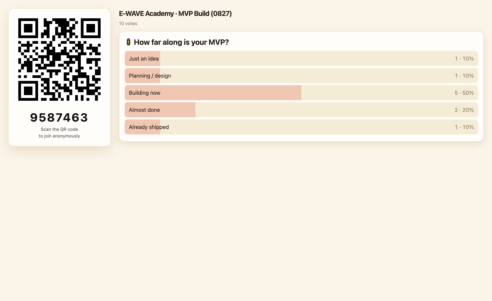
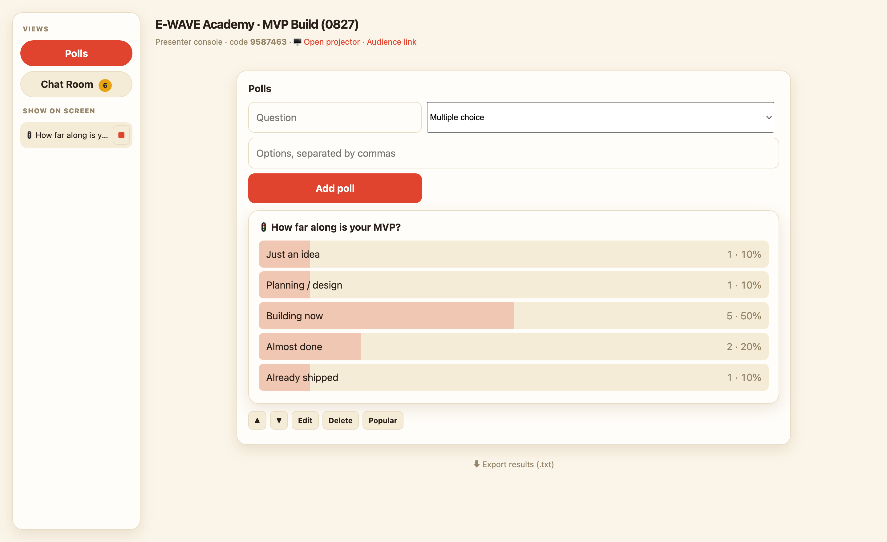
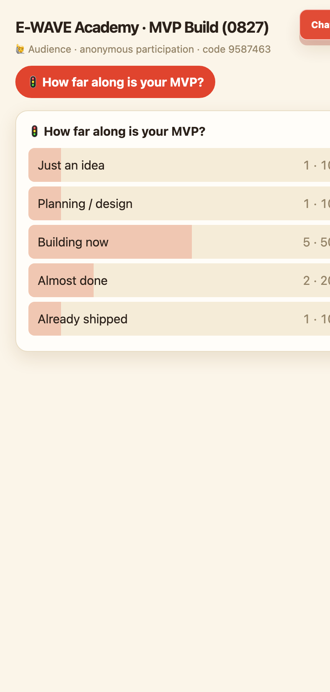
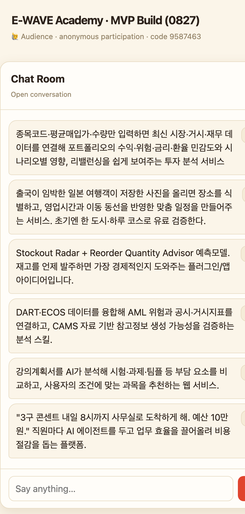
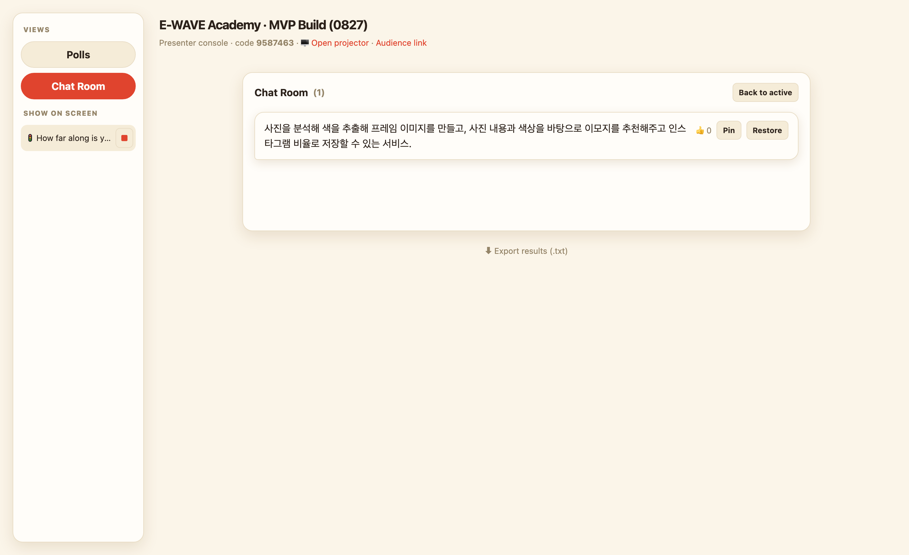
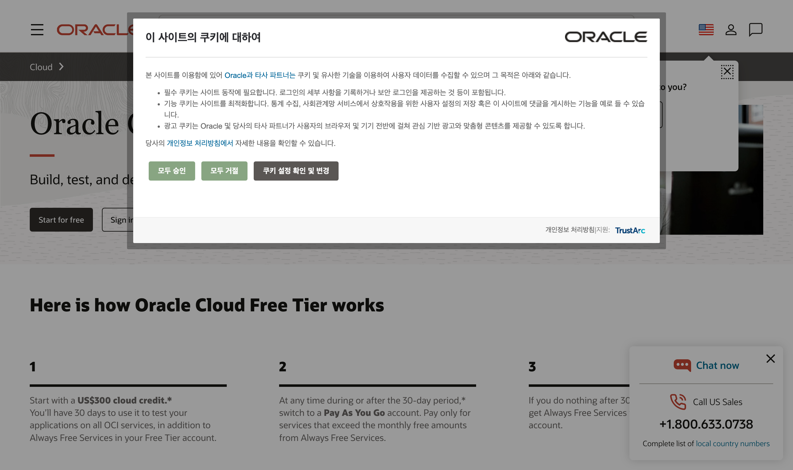
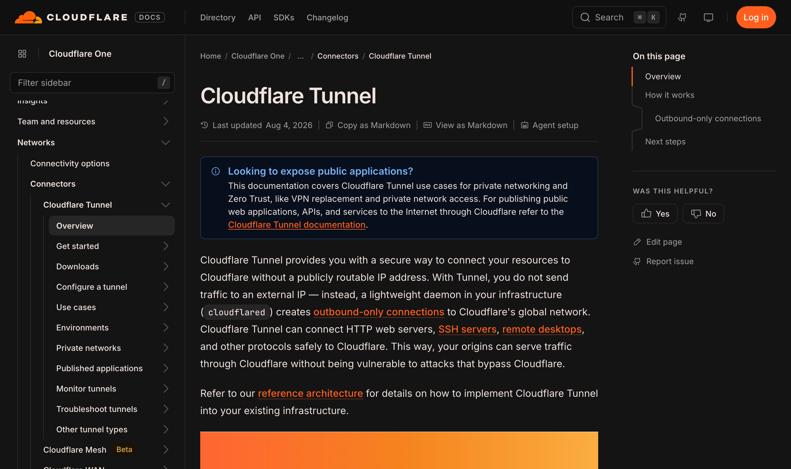
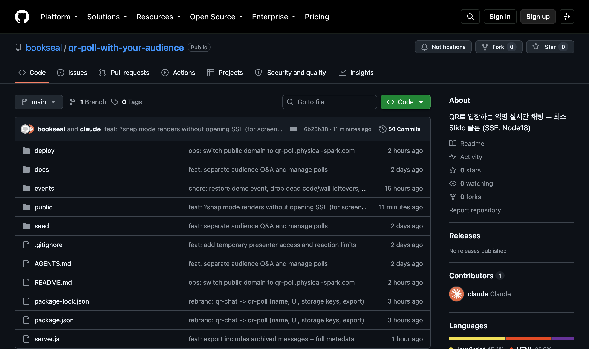

QR만 찍으면 가입·설치 없이 익명으로 참여하는 강의용 실시간 도구를,
AI에게 대화로 지시해 클라우드 배포까지 약 2시간 만에 완성한 과정 기록.
제작 기록 · 2026-08 · 수치는 실제 세션 로그에서 추출
1QR Poll이란?
강의장에서 쓰는 "가벼운 Slido" — 청중 참여를 실시간으로 모으는 도구
발표자가 화면에 QR코드를 띄우면, 청중은 폰으로 찍어 익명으로 메시지·질문·투표를 남긴다.
결과는 발표자 화면에 실시간으로 집계된다. 유료 서비스 Slido의 핵심만 떼어 직접 만든 버전이다.
🙋 청중 /r/코드
폰으로 QR 스캔 → 익명 메시지·👍리액션·객관식 투표. 발표자가 지금 띄운 것만 보인다.
🖥️ 빔프로젝터 /present/코드
큰 화면 전용(읽기 전용). QR + 실시간 결과. 발표자가 고른 질문이 실시간 전환된다.
🎤 관리자 /admin/코드
강사 조종석. 질문 띄우기/다음, 메시지 삭제·고정, 결과 내보내기(txt). 비밀키로 보호.
💬 챗룸(백채널)
질문·투표와 별개로 항상 열리는 캐주얼 채팅. 오른쪽 위 플로팅 버튼으로 연다.
실시간은 어떻게?SSE(Server-Sent Events) —
쉽게 말해 "서버가 브라우저로 새 소식을 계속 밀어주는 한 방향 통로". 누가 글을 남기면
접속 중인 모든 화면에 즉시 반영된다. 저장은 거창한 DB 대신 텍스트 파일에 한 줄씩 쌓는(JSONL) 가장 단순한 방식.
📸 실제 화면 (라이브 데모)

🖥️ 빔프로젝터 — QR + poll 실시간 집계

🎤 관리자 콘솔 — 사이드바로 질문 띄우기·편집, 하단에 결과 내보내기(.txt)

📱 청중 — 탭해서 투표

📱 청중 — 챗룸(익명 백채널)

🗂️ 관리자 → 챗룸 → 아카이브된 메시지(soft delete, 복원 가능)
2얼마나 빨리, 어디에 배포했나
"만들기"만이 아니라 실제로 인터넷에서 굴러가게 만든 게 이 프로젝트의 핵심
~17분
첫 메시지 → 라이브 배포된 MVP (07:36 → 07:53 "잘 되네")
~2시간
Phase 0–3 완성 (관리자·프로젝터·실시간 동기화)
$0
서버 비용 (Oracle Cloud 무료 등급)
"클라우드 배포"란 — 내 컴퓨터를 넘어 남들이 쓰게 만들기
만든 걸 노트북에서만 돌리면 나만 쓴다. 배포(deploy)는 그걸 인터넷에 올려 누구나 접속하게 만드는 일이다.
이 서비스가 실제로 올라가 있는 곳(ssh prod로 접속해 확인한 현재 상태):
서버: Oracle Cloud(OCI) Always Free — Ampere A1 인스턴스. 쉽게 말해 오라클이 무료로 주는 ARM 서버. 사양은 Ubuntu 20.04 · ARM(aarch64) · 4 vCPU · 24GB RAM이고 19주 넘게 무중단 가동 중. 월 요금 $0.
항상 켜두기: systemd로 앱을 등록해 꺼지면 자동 재시작. ("관리인"이 상주하는 셈)
연결 통로: Cloudflare Tunnel — 방화벽·포트를 열지 않고 서버를 인터넷에 안전하게 잇는 통로. (원래 쓰려던 nginx 방식이 서버 사정으로 막혀 이걸로 우회)
주소: 직접 산 도메인 qr-poll.physical-spark.com을 그 통로에 연결. QR은 접속 주소를 자동으로 담는다.
즉, 무료 클라우드 + 터널 + 도메인으로 비용 없이 실서비스처럼 운영 중이다.
쓴 서비스

Oracle Cloud — 무료 서버(Ampere A1)

Cloudflare Tunnel — 안전한 연결 통로

GitHub — 코드 저장·기록
3두 AI로 만들어 비교
같은 프로젝트를 Claude Code와 Codex CLI, 두 코딩 에이전트로 진행하며 성능을 비교했다
Claude Code
claude-opus-4-8
Anthropic · "계획하고, 눈으로 확인하며"
담당MVP 뼈대 · 배포 · 정리/리브랜딩
사람 지시 횟수≈ 18번
도구 사용명령 90 · 파일수정 67 · 읽기 22
실제 화면 검증≈ 54회 (브라우저 스크린샷)
Codex CLI
gpt-5.6-luna
OpenAI(GPT-5 기반) · "빠르게 자율 실행"
담당기능 대확장 · 챗룸 · 설문 관리
사람 지시 횟수≈ 53번
진행단일 세션 ~4시간 43분
실제 화면 검증없음 (CLI 단독)
항목
Claude (opus-4-8)
Codex (gpt-5.6-luna)
일하는 방식
계획 → 구현 → 실제 브라우저로 눈 확인 → 단계별 배포
한 세션에서 빠르게 자율 반복
지시 입자
큰 그림(설계·phase)을 맡김 — 18번
더 잘게·자주 교정 — 53번
강점
엔드투엔드 검증, 배포·인프라, 회귀 정리
속도, 대규모 리팩터, 기능 폭
약점
검증·질문에 시간이 더 듦
마감 일관성(잔여물)·시각 확인 부재
결론: Codex가 넓고 빠르게 밀어붙이면, Claude가 계획·검증·정리로 마감을 잡는 하이브리드가 잘 맞았다.
4전체 프롬프트 흐름
첫 설계 한 문단에서 시작해, 배포 → 반복 개선 → 다른 AI로 확장 → 정리로 이어졌다
8/28 07:36 · Claude
설계 프롬프트 한 방 → 로컬 MVP
"slido 같은 걸 가장 간단하게" 한 문단으로 방향·제약·배포·검증·프로세스를 모두 지정.
8/28 07:45–07:53 · Claude
라이브 배포 (≈17분)
"응 배포도 해보자" → Cloudflare Tunnel로 올리고 "잘 되네. 계속 phase를 진행하자".
8/28 07:53–09:32 · Claude
Phase 1→3 반복
리액션·정렬 → 객관식 poll → 관리자/프로젝터 분리 → 청중이 발표자 focus를 따라감. 한글 IME·캐시 버그도 그때그때 수정.
데드코드/중복 제거, 데모 복구, qr-chat→qr-poll 리브랜딩, 도메인 전환, 결과 txt export, 이 리포트.
5인상적인 프롬프트 — 원문 + 분석
실제 보낸 말 원문 그대로. 왜 좋은 지시였는지, 모델에 따라 어떻게 달라졌는지
① 방향을 통째로 세운 첫 프롬프트 (Claude)
사용자 → Claude Code
❯ slido 같은 서비스를 만드려고 하는데 가장 간단하게 해보려고 한다. 이게 vercel로 배포가 가능할지.
mvp로는 실시간 채팅. qr로 해서 익명으로 남기는 거
거기가 phase를 발전시켜나가며 커지면 된다.
아니면 "ssh prod"이라는 리눅스 서버로 배포를 일단 간단하게 하고 cloudflare로 qr-chat.physical-spark.com 으로 운영해도 되고, cloudflare에서 이 도메인을 샀거든.
결국 slido를 따라 하는건데, 슬리도보다 기능은 작을 것이다. 설문 문구 같은거도 그냥 간단하게 json이라던지 md로 바꾸게 하고 ui는 그냥 최소한의 gui만 있으면 된다. todolist 같은 수준.
크롬 cdp로 확인해봐
[Notion 강의안 링크] [Slido 관리자 링크]
딱 위의 수준의 강의를 할 수 있을정도면 된다. 실제 데이터도 한번 위에거로 예시로 만들어봐.
github repo 에 public 으로 만들고 계속 commit push 하면서 만들어봐. roadmap까지 docs나 readme에 꾸미면서
이 한 문단에 설계 요소 8가지가 다 있다
① 레퍼런스로 목표"slido 같은" — 목표를 한 단어로 합의.
② 제약 먼저"가장 간단하게 / 기능은 작을 것 / todolist 수준" — 범위를 좁혀 완성률을 높인다.
③ 단계적 사고"mvp로는 … phase를 발전시켜나가며" — MVP→성장 경로 제시.
④ 선택지+판단 위임"vercel … 아니면 ssh prod … 도 되고" — 옵션을 주되 결정은 AI에게.
⑤ 운영까지 시야도메인·서버·cloudflare 언급 — "실제로 굴러가게"가 목표.
⑥ 설정 분리"설문 문구 … json/md로" — 값을 코드에 박지 말고 바꾸기 쉬운 파일로.
⑦ 검증 지시"크롬 cdp로 확인해봐 / 실제 데이터도 예시로" — AI가 실물을 보고 만들게.
⑧ 프로세스 지정"public repo … commit push … roadmap까지" — 작업 방식·산출물 기준을 못 박음.
② 제품 고민을 소리 내어 (Claude)
사용자 → Claude Code
❯ 그래 챗룸은 따로 오른쪽 위에 동그라미로 위치시키자. 그냥 청중q&a 가 아니라 챗룸인거지. 마치 우리가 오픈카톡으로 오만거 다 하듯…. 그건 slido와 좀 달라지네. 하지만 이건 확실히 그 동그라미 버튼으로 오른쪽 위에 해야 할듯 오른쪽 아래 해도 되려나….. 잘 모르겠네. 이게 ui를 전체를 흐릴까봐. 그 나중에 뭐 poll할때 text input 하고 전송버튼이 있을 수 있지
불확실함을 숨기지 않은 게 핵심
비유로 의도"오픈카톡으로 오만거 다 하듯" — 원하는 느낌을 정확히 옮긴다.
고민을 공유"오른쪽 위? 아래? 잘 모르겠네 / UI를 흐릴까봐" — 결정 못 한 지점과 걱정을 말하니 AI가 트레이드오프를 정리해 추천한다.
배운 점완벽한 스펙이 아니어도 된다. "이게 고민인데 어떻게 할까"가 더 나은 결과를 부른다.
③ Codex에선 — 더 잘게, 더 자주 교정 (Codex)
같은 사람이지만 모델에 맞춰 지시 방식을 바꿨다. Claude엔 큰 그림을 맡겼다면,
Codex는 결과가 자주 어긋나 작은 단위로 쪼개고 바로잡는 프롬프트가 많았다(총 53번).
사용자 → Codex
❯ audience Q&A는 완전히 좀 다른 형태로 오른쪽 위에 Ask Anything 이런 동그란 floating 버튼으로 만들고 그거 누르면 보이는거지. 어때
사용자 → Codex (교정·롤백)
❯ 관리자가 왼쪽 사이드 패널을 만드들어라고. 왼쪽 에 사이드패널을 둬야지. 뭐하냐. 다시 롤백해서 사ㅣ드 패널 왼쪽에 만들어
모델 능력에 맞춘 "프롬프트 입자(granularity)" 조절
관찰Codex는 UI 위치·상태를 자주 어긋나게 잡아, "왼쪽에 만들어 / 다시 롤백해서 / 너무 오류가 많네" 같은 교정 프롬프트가 반복됐다.
대응사용자는 큰 걸 맡기는 대신 작업을 잘게 쪼개고 즉시 피드백했다.
배운 점강한 모델엔 위임, 약한 모델엔 분해+검증. 프롬프트 크기를 모델에 맞추는 것도 실력.
6따라 하기 — 좋은 프롬프트 6단계
위 사례에서 뽑은, 누구나 쓸 수 있는 틀
1. 목표를 레퍼런스로 — "○○ 같은 걸 만들고 싶어"
2. 범위를 좁혀라 — "가장 간단하게, 딱 이 정도만" (안 만들 것도 말하기)
3. 단계로 나눠라 — "먼저 MVP는 △△, 그다음 phase로"
4. 선택지+판단을 맡겨라 — "A로 할까 B로 할까? 추천해줘"
5. 검증을 시켜라 — "직접 실행/화면 보고 확인, 예시 데이터도"
6. 모델에 맞춰 입자 조절 — 강한 모델엔 위임, 약한 모델엔 잘게 쪼개고 자주 확인
핵심은 완벽한 명세서가 아니라 "방향 + 제약 + 위임". 개발 용어를 다 몰라도
무엇을·왜·어디까지만 분명히 말하면 AI가 나머지를 채운다.
7바이브코딩은 이렇게 흘러갑니다
코드를 한 줄도 안 써도 괜찮다 — 이 6가지가 계속 돌아간다
1
🎯 말한다
사람
"이런 걸 만들고 싶어" — 목표를 아는 서비스에 빗대고, 범위를 좁혀서 한 문단으로. 완벽할 필요 없다.
2
🛠️ 만든다
AI
AI가 파일을 만들고 코드를 쓰고, 필요한 도구(서버·라이브러리)를 스스로 고른다. 내 노트북에서 일단 돌아가게 한다.
3
👀 확인한다
AI가 보여주고 · 사람이 본다
말로 "됐어요"가 아니라 실제 화면·스크린샷·실행 결과로 확인. 이 프로젝트에선 AI가 브라우저로 직접 찍어 54번 확인했다.
4
🔁 고친다
사람
"이건 오른쪽 위로 / 이 글자 작게 / 이건 빼줘"처럼 구체적으로. 고민되면 "잘 모르겠는데 어떻게 할까?"라고 물어도 된다.
5
🚀 올린다
AI
인터넷에 배포해 남들이 쓰게 만든다(서버·도메인·항상 켜두기). 무료 클라우드로 $0에도 가능하다.
6
🌱 키운다
반복
한 번에 완성하지 말고 작은 버전(MVP)부터. 되면 다음 기능(phase)으로. 막히면? 더 잘게 쪼개서 부탁하면 된다(이 프로젝트의 Codex 구간처럼).
역할 나누기 한 줄 요약:사람은 방향·판단·검증을, AI는 실행·반복·기록을 맡는다.
당신이 코드를 몰라도 무엇을·왜·어디까지를 계속 말해주면, 서비스가 실제로 세상에 나온다.
수치는 실제 세션 트랜스크립트(Claude Code·Codex 로그)에서 추출했습니다.
민감정보(관리자 키·이메일·개인정보)는 담지 않았고, 외부 링크는 표시로 대체했습니다.
서버 상태는 ssh prod에서 직접 확인(OCI Always Free · Ampere A1).